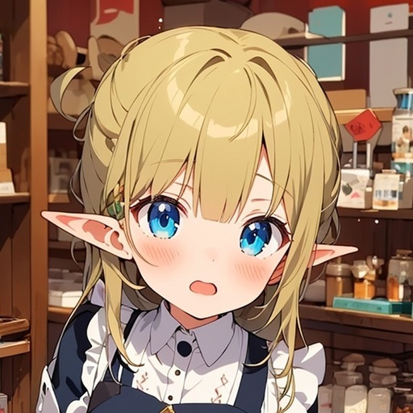
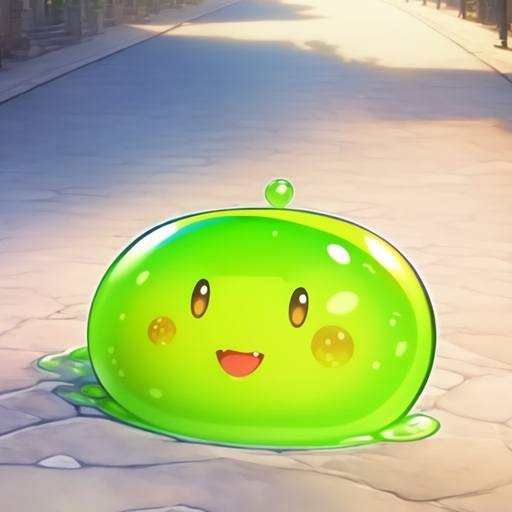
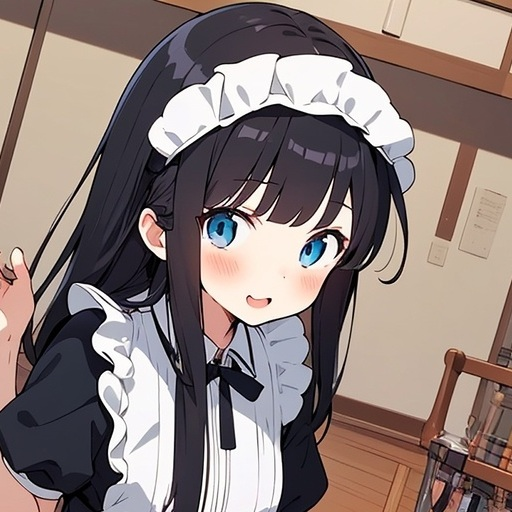
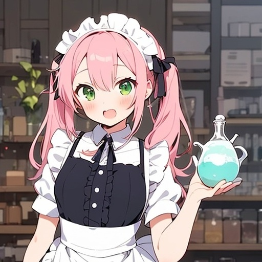

主人公／13歳
ハシユリ村の貧乏な錬金術師の家に生まれた少女。わずかにエルフの血を引く金髪碧眼で、少し尖った耳が特徴。年中式を終え、兄に家を譲って憧れの王都へ。結果的に王都では世界最高水準の錬金術師であることが判明する。
露店から始まり、ホーランド商業ギルドに加盟して「ミレーユ錬金術調薬店」を開業。ポムとともに王都の生活を楽しむ。

相棒／スライム
半透明の緑色のスライム。ミレーユが薬草採取中に出会い、それ以来ずっと一緒にいる。薬草が大好物で、特にヒール効果の高いものを好む。
雌雄同体で性別はなく、女の子が好き。ミレーユの膝の上やお風呂でくつろぐのが日常。集客や癒し担当としても活躍する。

通いメイド／13歳
ホーランド商業ギルドから派遣されたメイド。黒髪ツヤツヤのセミロングで、胸が大きいのが特徴。ミレーユと同い年。
畑仕事や仕入れ、接客を手伝う。メイド服を「戦闘服」と誇らしく思っており、明るくしっかり者。お風呂やクッキー作りでもミレーユと仲良くなる。

内弟子／13歳
メホリック商業ギルドから来た弟子。ピンク髪のふわふわツインテールが可愛らしい。選抜試験で集中力と安定感を見せて選ばれた。
ミレーユの家に住み込み、料理や調薬を手伝う。少しお嬢様気質だが素直で、ミレーユに「お姉さん」と呼ばれて喜ぶ。お風呂やグラノーラでよく甘える。
ホーランド商業ギルド副会長
茶色髪ロングの若き副会長。父親とともに新興のホーランド商業ギルドを牽引する。露店でポーションを売るミレーユに目をつけ、頭金なしで店舗を貸し出す条件で勧誘した。
薬草卸問屋の出身で知識が豊富。ミレーユの才能を高く評価し、対等な関係を築こうとする。
メホリック商業ギルド・ナンバースリー
老紳士。伝統あるメホリック商業ギルドの実力者。若い女の子が好き（いわゆる「萌え」）で、美少女メイドを多く雇っているが、やましいことはないと主張する。
ユグドラシルの木を所有しており、ミレーユの技術を高く評価。弟子の派遣や葉の提供を約束するなど、独特の存在感を放つ。
2人目の弟子／魔道具担当
書籍版2巻オリジナルキャラクター。13、4歳で、オレンジの短めの髪に緑色の瞳をしている。
ミレーユを尊敬して、魔道具の製作を頑張る。
王立騎士団の魔術師部隊の隊長
イケメンの男性。魔法が使えるエリート部隊を率いる。水魔法を使い火事の消化作業を行なった。
書籍版2巻では、マリーとランダーソンのちょっとした閑話も収録。
メホリック商業ギルド役員
ボロランより上の立場にいる古いギルド役員。裏で暗躍したりと、暗い影を落とす。
No1の会長がゲイドルドでNo2の副会長がバーモントという名前らしい。
トラスティア王国の国王
国王として、国の政治をつかさどっている。国の重大事件においてはその判断をする重要人物となる。